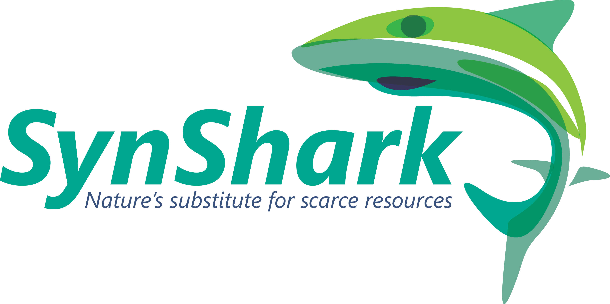
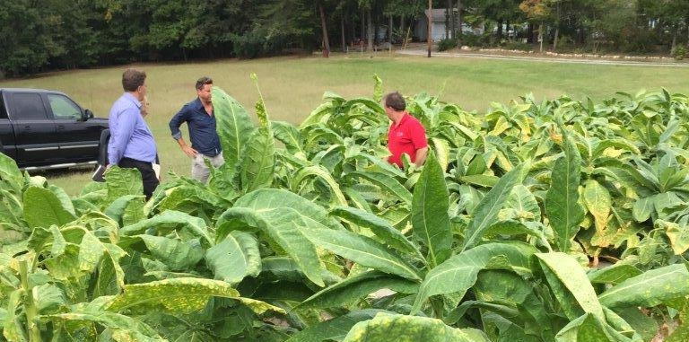
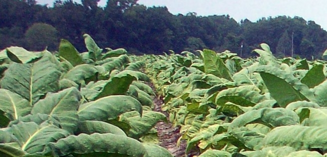

Toggle navigation
Joshua Yuan Group
Research
Publications
People
Software
News
News
Home
News
Synshark:Talk in PitchBreakfast
Learn More

Texas A&M Technology Commercialization: SynShark
Learn More

SynShark Producing Valuable Shark Oil in Tobacco Plants
Oct. 26, 2015
Learn More

SynShark’s Biochemical Technology Tops AgBio Showcase
May 21st, 2015
Learn More
Texas researcher looks into biodiesel production from lignin
January 17, 2013
Learn More